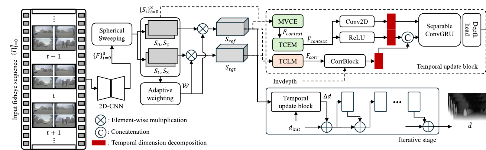

Multi-view Context
MVCE combines complementary observations from all four fisheye views to alleviate viewpoint ambiguity and occlusion in the stitched ERP features.
Synchronized depth predictions on the Sunny sequence. TC-Omni suppresses frame-to-frame flicker while retaining scene structure.
Temporally consistent depth estimation is essential for precise omnidirectional 3D reconstruction, yet existing omnidirectional stereo matching methods process frames independently. We propose TC-Omni, the first OSM framework designed to predict temporally consistent omnidirectional depth from sequential inputs. A multi-view context enhancement module integrates complementary observations from all viewpoints, while temporal context enhancement and temporal correlation learning explicitly model spatio-temporal information. We further introduce a confidence-based temporal gradient matching loss that emphasizes reliable regions and suppresses ambiguous supervision. Experiments on synthetic and real-world sequential datasets demonstrate state-of-the-art depth accuracy and temporal consistency.

Sequential multi-view fisheye features are projected into ERP space and refined by spatial and temporal enhancement modules before recurrent depth estimation.
MVCE combines complementary observations from all four fisheye views to alleviate viewpoint ambiguity and occlusion in the stitched ERP features.
TCEM enhances temporal context, while TCLM learns temporally coherent correlation features for iterative 3D ConvGRU updates.
CTGM loss weights temporal gradient supervision using photometric confidence, reducing harmful constraints in ambiguous regions.
TC-Omni achieves the best EPE and TEPE on both Sunny and the real-world OmniScape dataset. Compared with sequential RomniStereo, it reduces EPE and TEPE by 13.90% and 8.78% on Sunny, and by 5.93% and 6.43% on OmniScape.
| Method | Sunny | OmniScape | ||
|---|---|---|---|---|
| EPE ↓ | TEPE ↓ | EPE ↓ | TEPE ↓ | |
| RomniStereo | 0.848 | 0.557 | 2.997 | 1.094 |
| MDP-Omni | 0.873 | 0.529 | 3.291 | 1.121 |
| RomniStereo* | 0.748 | 0.444 | 3.051 | 0.902 |
| TC-Omni (Ours) | 0.644 | 0.405 | 2.870 | 0.844 |
Main comparison from the paper. * denotes a single-frame model extended with 3D CNN layers for sequential inputs. Lower is better for all reported metrics.
@inproceedings{lee2026tcomni,
author = {Lee, Jaemyeong and Song, Jimin and Lee, Sang Jun},
title = {TC-Omni: Temporally Consistent Omnidirectional Stereo Matching},
booktitle = {British Machine Vision Conference (BMVC)},
year = {2026}
}